Цена по запросупришлём КП за день
ЛОР-комбайны, кресла, эндоскопия и диагностика Happersberger Otopront.
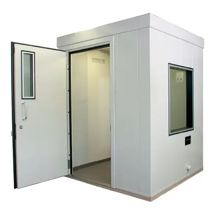
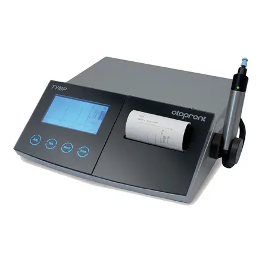
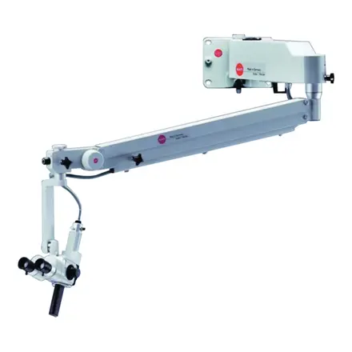
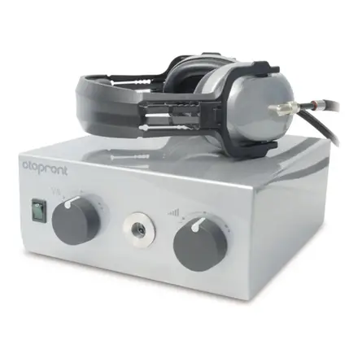
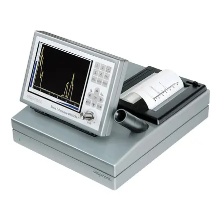
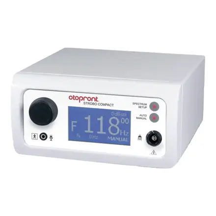
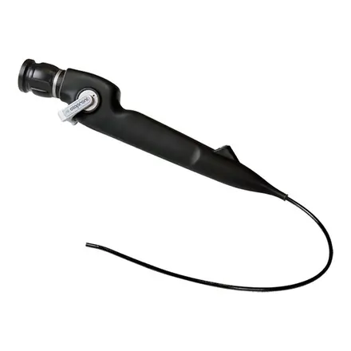
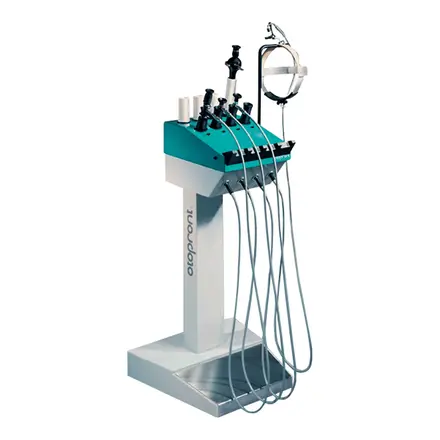
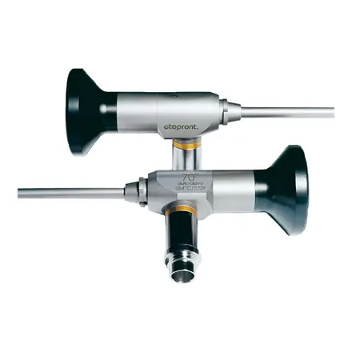
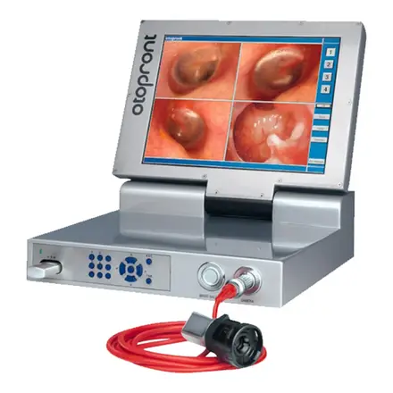
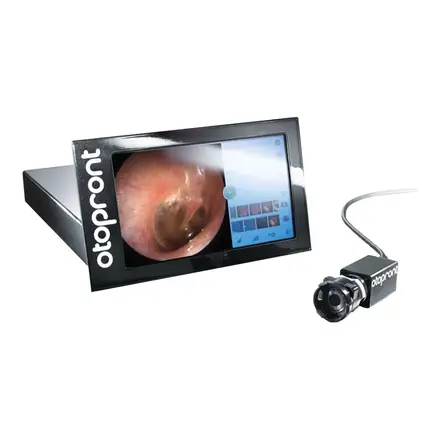
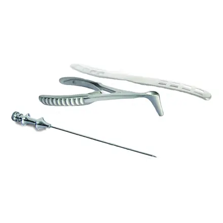
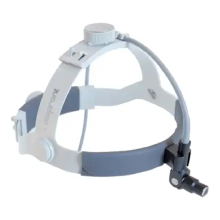
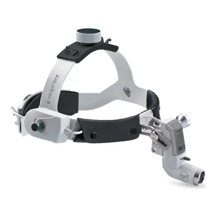
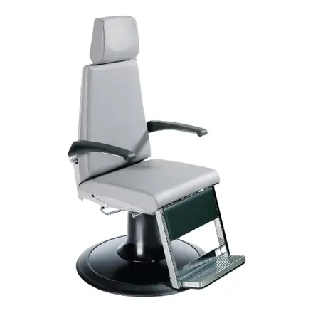
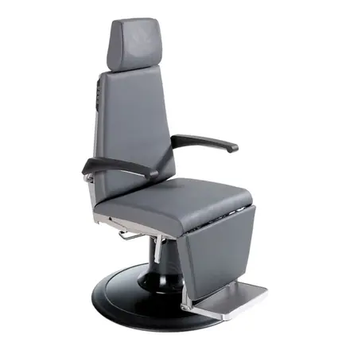

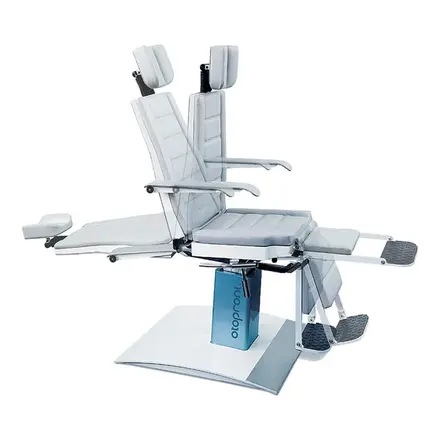
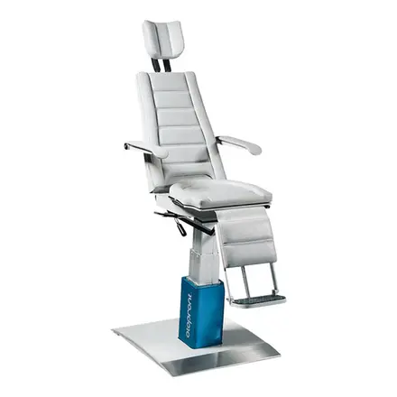
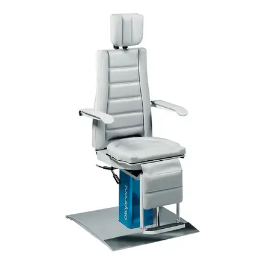
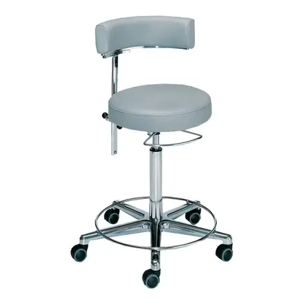
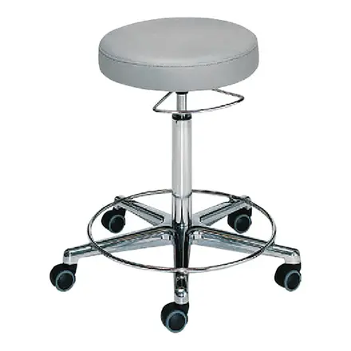
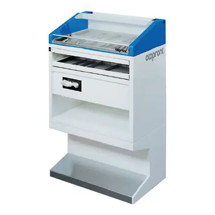
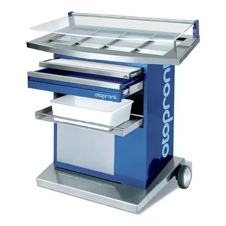
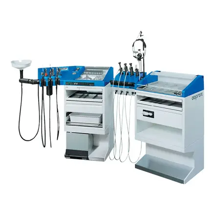
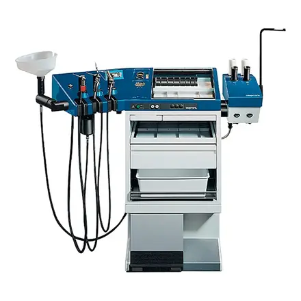
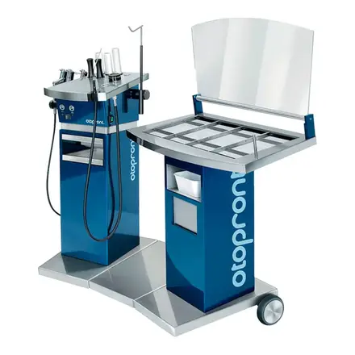
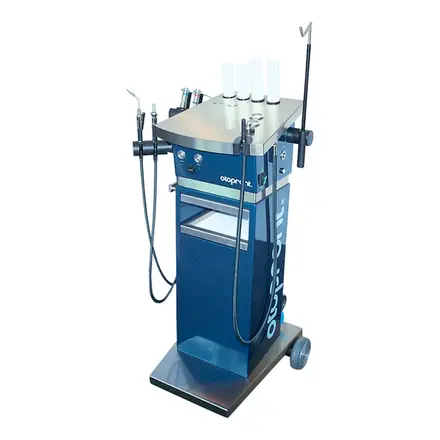
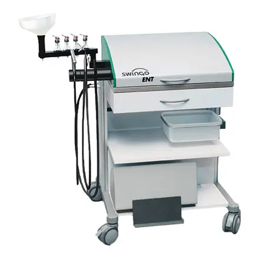

ЛОР-комбайны, кресла, эндоскопия и диагностика Happersberger Otopront.
Адрес на сайте: /brands/otopront/